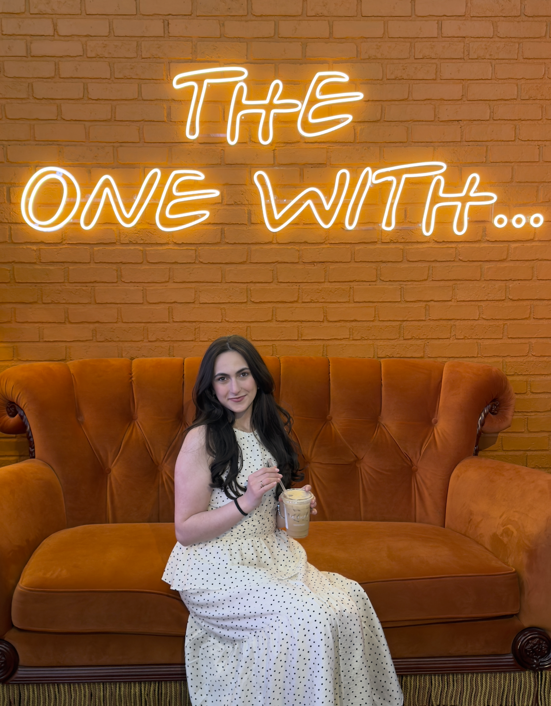

Introduction
Asya Karaeva | Adorable Koala

I understand that what I post here is publicly viewable, and I will not post anything that I do not want the public to see. — AK, 05/19/2026
Hello! My name is Asya, and I am excited to meet everyone. I love spending time outdoors and trying new things. I am also a coffee enthusiast and enjoy visiting new cafés, like the one shown above.
- Personal Background: I am 20 years old. I was born in Chicago and moved to Charlotte when I was seven years old. I have lived here ever since. I speak three languages: English, Turkish, and Russian.
- Professional Background: I currently assist with a family-owned logistics business. This experience has helped me learn more about communication, organization, and business operations.
- Academic Background: I am a junior computer science major at UNC Charlotte with a concentration in software engineering. I completed college courses through CPCC while I was in high school as part of a dual-enrollment program. Although this is my second year at UNC Charlotte, I am classified as a junior based on my credits.
- Primary Computer: I use a 16-inch MacBook Pro running macOS. During the Fall and Spring semesters, I usually work on campus. At other times, I primarily work from my home office.
-
Courses I’m Taking and Why:
- ITIS3135 – Front-End Web Application Development: I was excited to begin designing and developing websites and to learn more about front-end development. This course is also required for my degree, and I wanted to balance it with my other courses.
- BUSN2000 – Topics in Business and Economics: I needed an additional elective outside of my major. I have also always been curious about business courses and have considered studying business in addition to computer science.
- Funny or Interesting Item to Remember Me By: My husband and I took a three-day trip to New York for our one-year anniversary. The only places I had saved for the trip were coffee shops, so he had to plan everything else.
- Something Else I’d Like to Share: I can play the piano!
-
“Do not go where the path may lead, go instead where there is no path and leave a trail.”
— Ralph Waldo Emerson